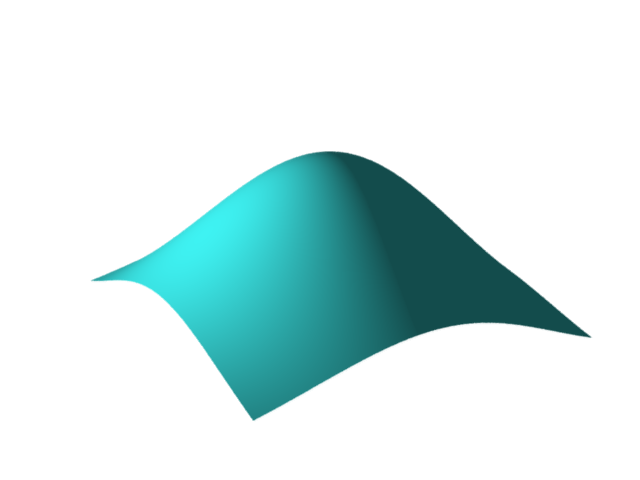
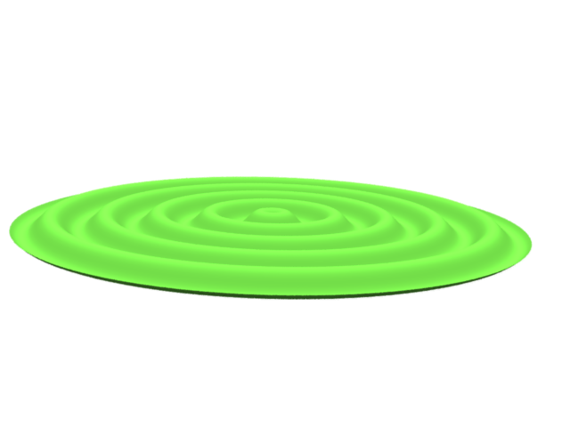
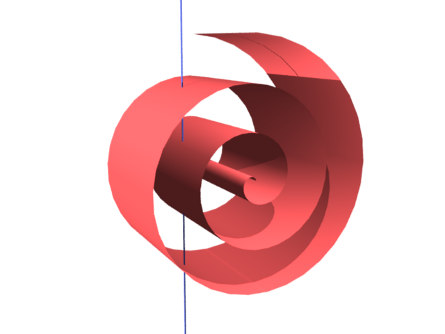

আমরা differential geometry শেখা শুরু করব ${\mathbb R}^3$-এর মধ্যে বিভিন্ন surface-দের কথা
দিয়ে৷ যেহেতু এরা সবাই ${\mathbb R}^3$-এর subset, তাই এদের প্রতিটা বিন্দুকেই
$(x,y,z)$ আকারে লেখা যাবে৷ এই তিনটে variable এর মধ্যে কোন ধরণের
সম্পর্ক থাকলে subset-টা একটা surface হবে সেটা প্রথমে বুঝব৷ সবচেয়ে সহজ ধরণের
surface-রা হল যেখানে $z$ হবে $x,y$-এর একটা function, অর্থাৎ subset-টার
প্রতিটা বিন্দুই হবে $(x,y,f(x,y))$-এর মত৷ এই ধরণের surface হল $f(x,y)$-এর গ্রাফ৷ যেমন
যদি আমরা $x,y\in [-10,10]$ নিই, আর $f(x,y) = e^{-(x^2+y^2)}$ নিই, তবে এইরকম একটা
surface পাব৷

এই রকম surface সর্বদা একটা rectangle-এর উপরে থাকে, এবং
rectangle-টার কোনো বিন্দু দিয়ে vertical
লাইন টানলে সেটা ওই surface-কে একবারই ছেদ করে৷ কিন্তু এমন অনেক surface নিয়ে আমাদের কাজ করতে হয়
যেগুলো কোনো rectangle-এর উপরে নেই, যেমন এইটা--

বা একই vertical লাইন বার বার ছেদ করে, যেমন এইটা--

এদেরকে অংকের ভাষায প্রকাশ করার কায়দা হল প্রতিটা বিন্দুকে $(x(u,v), y(u,v), z(u,v))$ আকারে লেখা, যেখানে
$(u,v)$ কোনো একটা rectangle-এর রয়েছে৷
EXAMPLE: যেমন ধরা যাক ওই জলের ঢেউয়ের মত surface-টা৷
ওটা পেয়েছি $z=\sin x$-এর গ্রাফটাকে $z$-axis বরাবর ঘুরিয়ে৷ তার মানে প্রতিটা বিন্দুর অবস্থান
সনাক্ত করতে দুটো তথ্য লাগবে--এক, $z=\sin x$ গ্রাফের কোন বিন্দু থেকে তার জন্ম, এবং দুই, কতটা ঘোরানোর
ফলে সেই বিন্দুটা এই অবস্থানে এসেছে৷ এদিকে $z=\sin x$-এর গ্রাফের কোনো বিন্দুর অবস্থান তো খালি $x $ বলে
দিলেই জানা যায়৷ সুতরাং এই surface-এর উপর যেকোনো বিন্দুকেই $(x,\theta)$ দিয়ে প্রকাশ করা যায়৷
বিন্দুটা হবে $(x\cos\theta, x\sin\theta, \sin x),$ যেখানে $(x,\theta)\in [0,10\pi]\times[0,2\pi).$
এখানে $x$-এর সর্বোচ্চ মান $10\pi$ নেওয়াটা নিতান্তই আমার খেয়াল৷
অংকটা আরেকভাবেও করা যেত৷ এটা $f(x,y) = \sin (\sqrt{x^2+y^2})$-এর গ্রাফের একটা গোলাকার অংশ৷ প্রথমে আমরা
গোলাকার অংশটাকে (মানে $xy$-plane-এর যে গোলাকার অংশের উপর ঢেউগুলো রয়েছে), সেটাকে প্রকাশ করে
নিই৷ সেটা করার জন্য polar coordinate-এর কাজ করলে সুবিধা, $(r\cos \theta, r\sin \theta),$ যেখানে
$(r,\theta)\in [0,10\pi]\times[0,2\pi).$ এবার $f(x,y) = \sin (\sqrt{x^2+y^2})$-এর মধ্যে $x=r\cos\theta$
এবং $y = r\sin\theta$ বসালেই হবে৷
একইভাবে ওই spiral-এর মত surface-টাকেও প্রকাশ করা যাবে৷ এরকম একটা
spiral পাওয়ার একটা পথ হল $r = a\theta$ ব্যবহার করা, যেখানে $a>0$-টা দিয়ে ঠিক করা
যাবে spiral-টা কতটা টাইটভাবে প্যাঁচানো৷ ধরা যাক, এরকম একটা spiral নিলাম $xz$-plane-এ৷
তাহলে সেই spiral-এর উপর যেকোনো বিন্দুকে সনাক্ত করতে খালি $\theta$ জানাই যথেষ্ট,
$(x,z)=(r\cos \theta, r\sin \theta) = (a\theta\cos \theta, a\theta\sin \theta).$ এই জিনিসটাকে $y$-axis
বরাবর খানিকটা টেনে গেলেই আমাদের surface-টা তৈরী হবে৷ তার মানে surface-টার প্রতিটা বিন্দুকে সনাক্ত
করতে লাগছে দুটো জিনিস, $\theta$ (মানে spiral-এর কোন্ বিন্দু), এবং $y$ (মানে সেটাকে কতটা
টানা হয়েছে)৷ অতএব পেলাম $(x,y,z)=(r\cos t(a\theta\cos \theta, y, a\theta\sin \theta).$ এখানে $(\theta,y)$
রয়েছে কোনো একটা rectangle-এ৷
মন্তব্য
নীচে একটা মন্তব্য দেওয়ার জায়গা রয়েছে. দেখে মনে হবে যেন তার জন্য আগে log
in করতে হবে. যদি তাতে আপত্তি থাকে, তবে ওই "Name"-এর জায়গায় একবার
click করলেই "I'd rather post as a guest" বলে একটা option আসবে.
 একইভাবে ওই spiral-এর মত surface-টাকেও প্রকাশ করা যাবে৷ এরকম একটা
spiral পাওয়ার একটা পথ হল $r = a\theta$ ব্যবহার করা, যেখানে $a>0$-টা দিয়ে ঠিক করা
যাবে spiral-টা কতটা টাইটভাবে প্যাঁচানো৷ ধরা যাক, এরকম একটা spiral নিলাম $xz$-plane-এ৷
তাহলে সেই spiral-এর উপর যেকোনো বিন্দুকে সনাক্ত করতে খালি $\theta$ জানাই যথেষ্ট,
$(x,z)=(r\cos \theta, r\sin \theta) = (a\theta\cos \theta, a\theta\sin \theta).$ এই জিনিসটাকে $y$-axis
বরাবর খানিকটা টেনে গেলেই আমাদের surface-টা তৈরী হবে৷ তার মানে surface-টার প্রতিটা বিন্দুকে সনাক্ত
করতে লাগছে দুটো জিনিস, $\theta$ (মানে spiral-এর কোন্ বিন্দু), এবং $y$ (মানে সেটাকে কতটা
টানা হয়েছে)৷ অতএব পেলাম $(x,y,z)=(r\cos t(a\theta\cos \theta, y, a\theta\sin \theta).$ এখানে $(\theta,y)$
রয়েছে কোনো একটা rectangle-এ৷
একইভাবে ওই spiral-এর মত surface-টাকেও প্রকাশ করা যাবে৷ এরকম একটা
spiral পাওয়ার একটা পথ হল $r = a\theta$ ব্যবহার করা, যেখানে $a>0$-টা দিয়ে ঠিক করা
যাবে spiral-টা কতটা টাইটভাবে প্যাঁচানো৷ ধরা যাক, এরকম একটা spiral নিলাম $xz$-plane-এ৷
তাহলে সেই spiral-এর উপর যেকোনো বিন্দুকে সনাক্ত করতে খালি $\theta$ জানাই যথেষ্ট,
$(x,z)=(r\cos \theta, r\sin \theta) = (a\theta\cos \theta, a\theta\sin \theta).$ এই জিনিসটাকে $y$-axis
বরাবর খানিকটা টেনে গেলেই আমাদের surface-টা তৈরী হবে৷ তার মানে surface-টার প্রতিটা বিন্দুকে সনাক্ত
করতে লাগছে দুটো জিনিস, $\theta$ (মানে spiral-এর কোন্ বিন্দু), এবং $y$ (মানে সেটাকে কতটা
টানা হয়েছে)৷ অতএব পেলাম $(x,y,z)=(r\cos t(a\theta\cos \theta, y, a\theta\sin \theta).$ এখানে $(\theta,y)$
রয়েছে কোনো একটা rectangle-এ৷